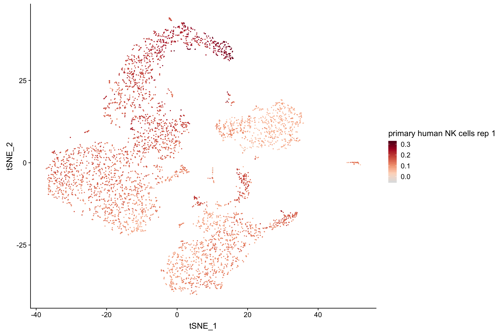
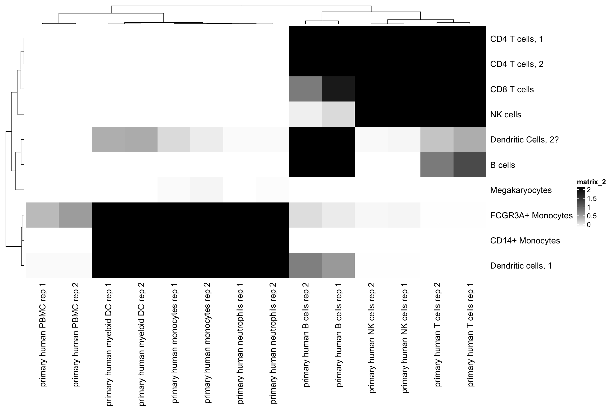
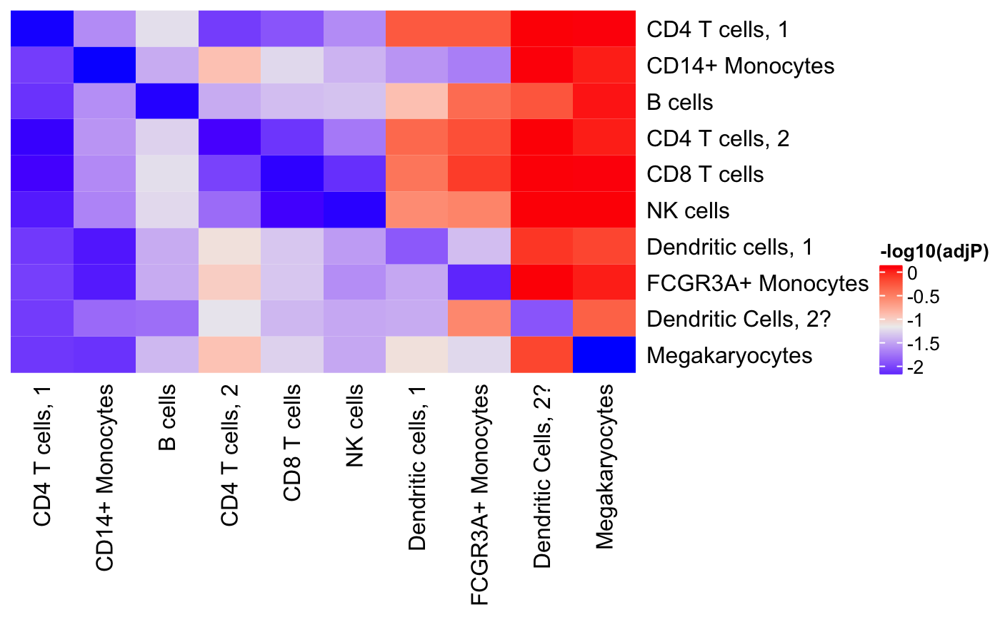
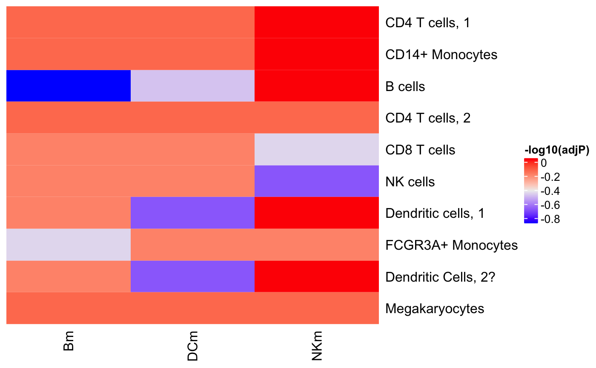

Why use clustifyR?
Single cell transcriptomes are difficult to annotate without extensive knowledge of the underlying biology of the system in question. Even with this knowledge, accurate identification can be challenging due to the lack of detectable expression of common marker genes defined by bulk RNA-seq, flow cytometry, etc.
clustifyR solves this problem by providing functions to automatically annotate single cells or clusters using bulk RNA-seq data or marker gene lists (ranked or unranked). Additional functions allow for exploratory analysis of calculated similarities between single cell RNA-seq datasets and reference data.
A simple example: 10x Genomics PBMCs
In this example, we take an example 10x Genomics 3’ scRNA-seq dataset comprised of peripheral blood mononuclear cells from a healthy human donor and annotate the cell clusters (identified using Seurat) using bulk RNA-seq data derived from isolated PBMC cell populations.
library(clustifyR)
# load pacakge data
data("pbmc4k_matrix")
data("pbmc4k_meta")
data("pbmc4k_vargenes")
data("pbmc_bulk_matrix")
# plot tSNE using known identities
plot_tsne(pbmc4k_meta, feature = "classified")
tSNE projection of PBMCs from a health human donor
Bulk RNA-Seq data can be obtained from any input source; here we will obtain a dataset from the recount2 database. This database provides > 2000 human RNA-Seq experiments that have been processed using a consistent pipeline. We have written a wrapper function to download a count matrix from recount2, given an SRA ID.
source(system.file("dl_recount.R", package = "clustifyR"))
pbmc_data <- dl_recount("SRP051688")
pbmc_data$read_counts[1:5, 1:5]
#> SRR1740034 SRR1740035 SRR1740036 SRR1740037 SRR1740038
#> A1BG 317 369 319 273 148
#> A1BG-AS1 421 442 405 409 109
#> A1CF 3 8 6 5 1
#> A2M 3 5 1 6 21
#> A2M-AS1 2 0 3 3 21
pbmc_data$meta_data[1:5, ]
#> # A tibble: 5 x 5
#> run time `cell type` assay donor
#> <chr> <chr> <chr> <chr> <chr>
#> 1 SRR1740034 0 d primary human B cells RNA-seq Donor: HD30
#> 2 SRR1740035 1 d primary human B cells RNA-seq Donor: HD30
#> 3 SRR1740036 3 d primary human B cells RNA-seq Donor: HD30
#> 4 SRR1740037 7 d primary human B cells RNA-seq Donor: HD30
#> 5 SRR1740038 0 d primary human myeloid DC RNA-seq Donor: HD30clustifyR provides the clustify() function, which takes as input a matrix of single cell RNA-seq expression values, a metadata table with cluster assignments, and a matrix with bulk RNA seq datasets.
As the heatmap below shows, most cell types are accurately classified using the default correlation method (pearson) and a list of highly variable genes in the single cell dataset identified using Seurat’s VMR method.
# run correlation (pearson by default)
res <- clustify(expr_mat = pbmc4k_matrix,
bulk_mat = pbmc_bulk_matrix,
metadata = pbmc4k_meta,
query_genes = pbmc4k_vargenes,
cluster_col = "classified")
# peek at correlation matrix
res[1:5, 1:5]
#> primary human B cells rep 1 primary human myeloid DC rep 1
#> B cells 0.7082729 0.4695588
#> CD14+ Monocytes 0.3350793 0.7291951
#> CD4 T cells, 1 0.5121501 0.4649881
#> CD4 T cells, 2 0.4991370 0.4524539
#> CD8 T cells 0.4505723 0.4157795
#> primary human monocytes rep 1
#> B cells 0.3996951
#> CD14+ Monocytes 0.7820196
#> CD4 T cells, 1 0.4101322
#> CD4 T cells, 2 0.3965490
#> CD8 T cells 0.3523080
#> primary human neutrophils rep 1
#> B cells 0.3676864
#> CD14+ Monocytes 0.6447463
#> CD4 T cells, 1 0.3750483
#> CD4 T cells, 2 0.3700925
#> CD8 T cells 0.3450042
#> primary human NK cells rep 1
#> B cells 0.4336838
#> CD14+ Monocytes 0.4085961
#> CD4 T cells, 1 0.5598035
#> CD4 T cells, 2 0.5983747
#> CD8 T cells 0.6661795
# view heatmap of correlation coefficients
library(ComplexHeatmap)
#> Loading required package: grid
#> ========================================
#> ComplexHeatmap version 1.17.1
#> Bioconductor page: http://bioconductor.org/packages/ComplexHeatmap/
#> Github page: https://github.com/jokergoo/ComplexHeatmap
#> Documentation: http://bioconductor.org/packages/ComplexHeatmap/
#>
#> If you use it in published research, please cite:
#> Gu, Z. Complex heatmaps reveal patterns and correlations in multidimensional
#> genomic data. Bioinformatics 2016.
#> ========================================
library(circlize)
#> ========================================
#> circlize version 0.4.4
#> CRAN page: https://cran.r-project.org/package=circlize
#> Github page: https://github.com/jokergoo/circlize
#> Documentation: http://jokergoo.github.io/circlize_book/book/
#>
#> If you use it in published research, please cite:
#> Gu, Z. circlize implements and enhances circular visualization
#> in R. Bioinformatics 2014.
#> ========================================
ComplexHeatmap::Heatmap(res, colorRamp2(c(0, 1), c("white", "black")))
Plot cluster identities and correlation coefficients
clustifyR provides functions to plot single cells uing pre-calculated tSNE embeddings (or those from any other dimensionality reduction method), and to plot correlation coefficients on those projections. The plots below show that the highest correlations between these bulk RNA-seq data and the test scRNA-seq dataset are restricted to the correct cell clusters.

# plot correlation coefficients on tSNE for each identity class
plot_cor(res,
pbmc4k_meta,
colnames(res)[c(1, 5)],
cluster_col = "classified")
#> [[1]]
#>
#> [[2]]
Correlation per cell
# run correlation (pearson by default)
res <- clustify(expr_mat = pbmc4k_matrix,
bulk_mat = pbmc_bulk_matrix,
query_genes = pbmc4k_vargenes,
per_cell = T)
plot_cor(res,
pbmc4k_meta,
colnames(res)[c(1, 5)])
#> [[1]]
#>
#> [[2]]
Obtain p-value for similarity using a permutation test
In addition to automatically generating a correlation matrix, clustifyR can calculate correlation p-values using permutation with the clustify() function. As with raw correlation coefficients, plotting a heatmap of -log(p-values) demonstrates that the most significant correlations are between corresponding bulk and single cell clusters.
# re-run clustify with =num_permute=1000 and return_full = TRUE
res <- clustify(pbmc4k_matrix,
pbmc_bulk_matrix,
pbmc4k_meta,
pbmc4k_vargenes,
num_perm = 1000,
cluster_col = "classified",
return_full = TRUE)
res$p_val[1:5, 1:5]
#> primary human B cells rep 1 primary human myeloid DC rep 1
#> B cells 0.000 1
#> CD14+ Monocytes 1.000 0
#> CD4 T cells, 1 0.000 1
#> CD4 T cells, 2 0.000 1
#> CD8 T cells 0.008 1
#> primary human monocytes rep 1
#> B cells 1
#> CD14+ Monocytes 0
#> CD4 T cells, 1 1
#> CD4 T cells, 2 1
#> CD8 T cells 1
#> primary human neutrophils rep 1
#> B cells 1
#> CD14+ Monocytes 0
#> CD4 T cells, 1 1
#> CD4 T cells, 2 1
#> CD8 T cells 1
#> primary human NK cells rep 1
#> B cells 1
#> CD14+ Monocytes 1
#> CD4 T cells, 1 0
#> CD4 T cells, 2 0
#> CD8 T cells 0
# view heatmap of correlation coefficients
Heatmap(-log(res$p_val+.01,10), colorRamp2(c(0, 2), c("white", "black")))
Using gene lists to classify cells (ranked or unranked)
# generate a dataframe of markers from Seurat (a common format)
pbmc4k_mm <- matrixize_markers(pbmc4k_markers)
head(pbmc4k_mm)
#> 0 1 2 3 4 5 6 7
#> 1 RPL31 S100A8 CD79A IL7R GZMK FGFBP2 FCER1A HES4
#> 2 RPS6 S100A9 IGHM ITGB1 CCL5 PRF1 CLEC10A CDKN1C
#> 3 RPS25 LYZ CD79B IL32 TRGC2 HOPX ENHO RP11-1008C21.1
#> 4 RPS12 S100A12 IGHD AQP3 CST7 GZMB CLIC2 FCGR3A
#> 5 RPS27 RP11-1143G9.4 TCL1A TRAC GZMA KLRD1 FLT3 TCF7L2
#> 6 RPL32 FCN1 MS4A1 LTB LYAR SPON2 PKIB CKB
#> 8 9
#> 1 LILRA4 PF4
#> 2 LRRC26 SDPR
#> 3 TPM2 TUBB1
#> 4 SCT ACRBP
#> 5 PTPRS GP9
#> 6 CLEC4C TMEM40# or just lists of genes
NKm <- c("GNLY", "NKG7", "ZBTB32", "IL2RB")
DCm <- c("FCER1A", "CST3", "ITGAX", "IRF8")
Bm <- c("MS4A1", "CD79A","CD79B","CD37")
markers <- data.frame(Bm, DCm, NKm)
markers
#> Bm DCm NKm
#> 1 MS4A1 FCER1A GNLY
#> 2 CD79A CST3 NKG7
#> 3 CD79B ITGAX ZBTB32
#> 4 CD37 IRF8 IL2RBGenerate binary expression calls from single cell data.
pbmc4k_avgb <- binarize_expr(pbmc4k_avg)
pbmc4k_avgb[1:5, c(1, 2, 10)]
#> 0 1 9
#> RP11-34P13.7 0 0 0
#> FO538757.2 0 0 0
#> AP006222.2 0 0 1
#> RP4-669L17.10 0 0 0
#> RP11-206L10.9 0 0 0Classify using a hypergeometric test
Here’s an example using ~100 markers per cluster
res <- compare_lists(pbmc4k_avgb, pbmc4k_mm)
# rename columns
colnames(res) <- left_join(data_frame(cluster = colnames(res)),
unique(data_frame(cluster = pbmc4k_meta$cluster,
classified = pbmc4k_meta$classified)),
by = "cluster") %>%
pull(classified)
rownames(res) <- colnames(res)
Heatmap(-log10(res + 1),
cluster_rows = FALSE,
cluster_columns = FALSE,
heatmap_legend_param = list(title = "-log10(adjP)"))
Here’s an example using ~100 markers per cluster
res2 <- compare_lists(pbmc4k_avgb, markers)
rownames(res2) <- left_join(data_frame(cluster = rownames(res2)),
unique(data_frame(cluster = pbmc4k_meta$cluster,
classified = pbmc4k_meta$classified)),
by = "cluster") %>%
pull(classified)
Heatmap(-log10(res2 + 1),
cluster_rows = FALSE,
cluster_columns = FALSE,
heatmap_legend_param = list(title = "-log10(adjP)"))